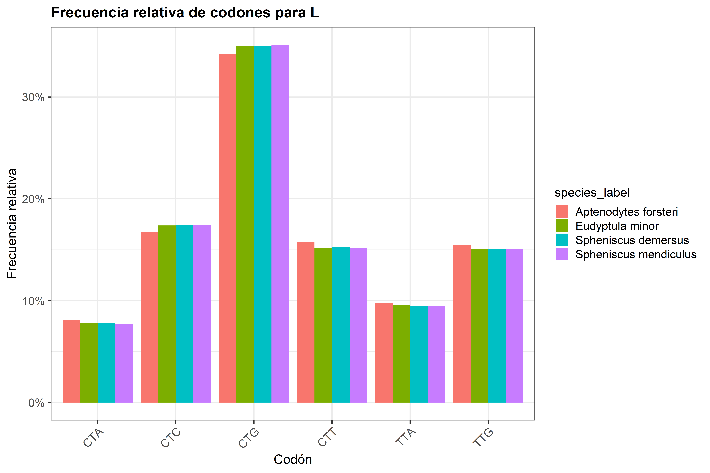
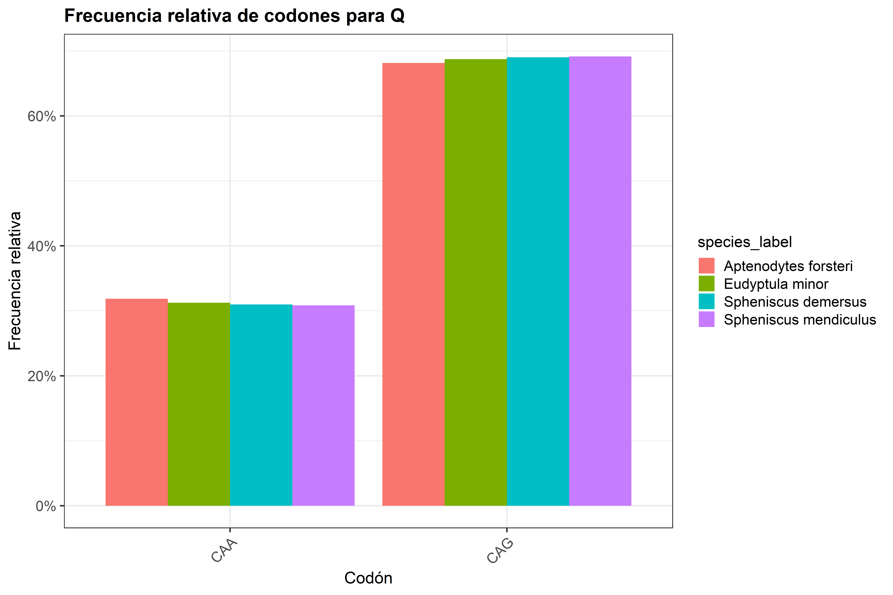
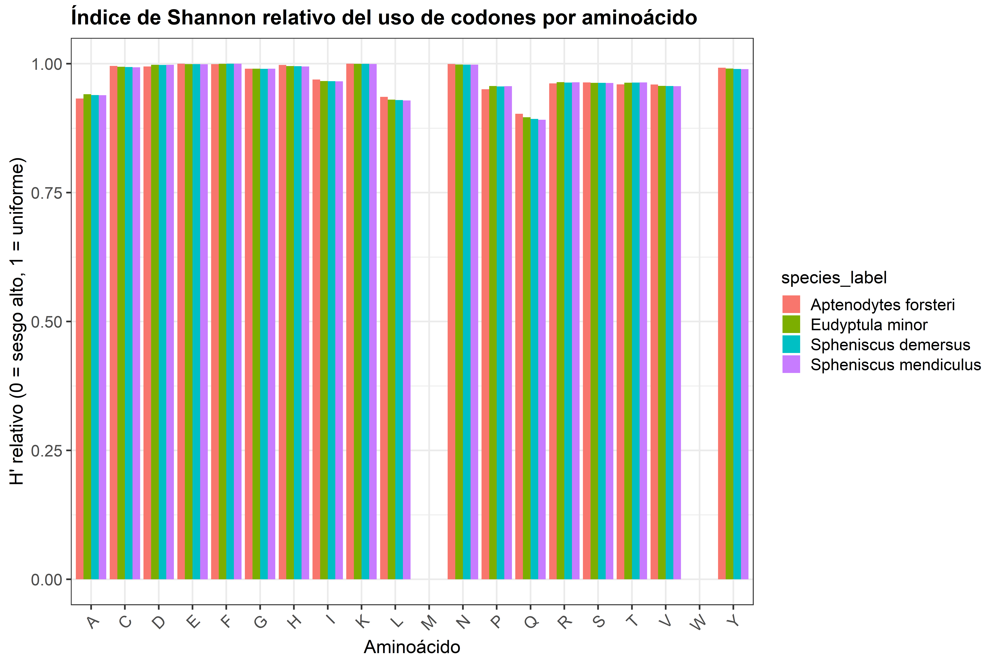
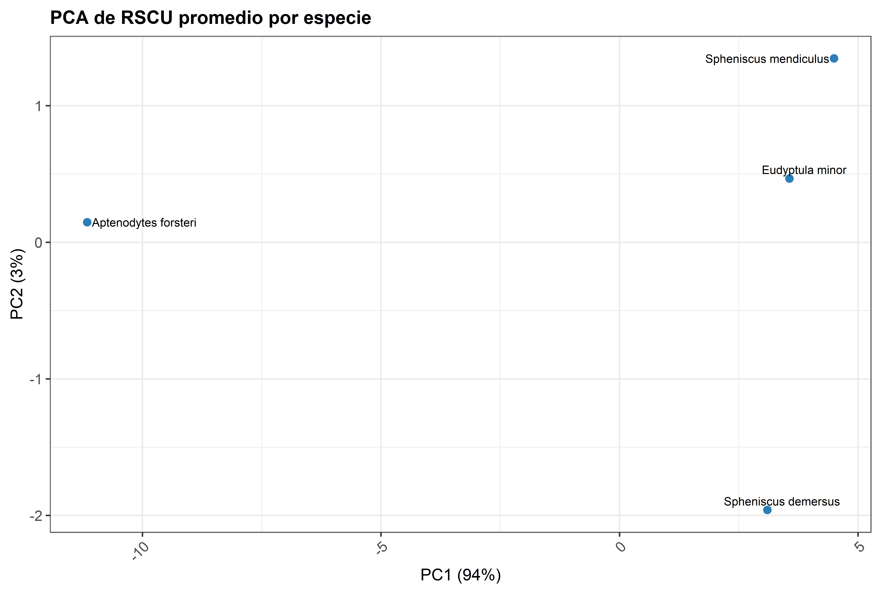
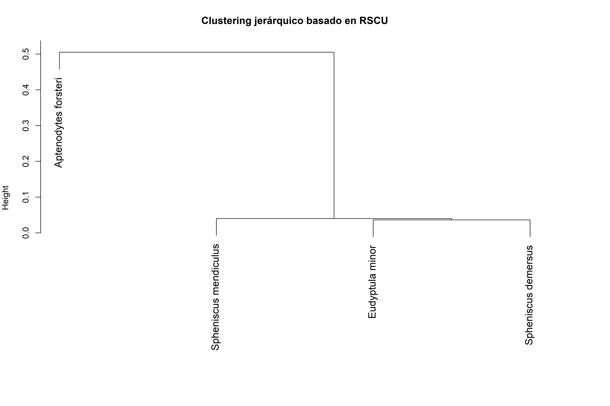
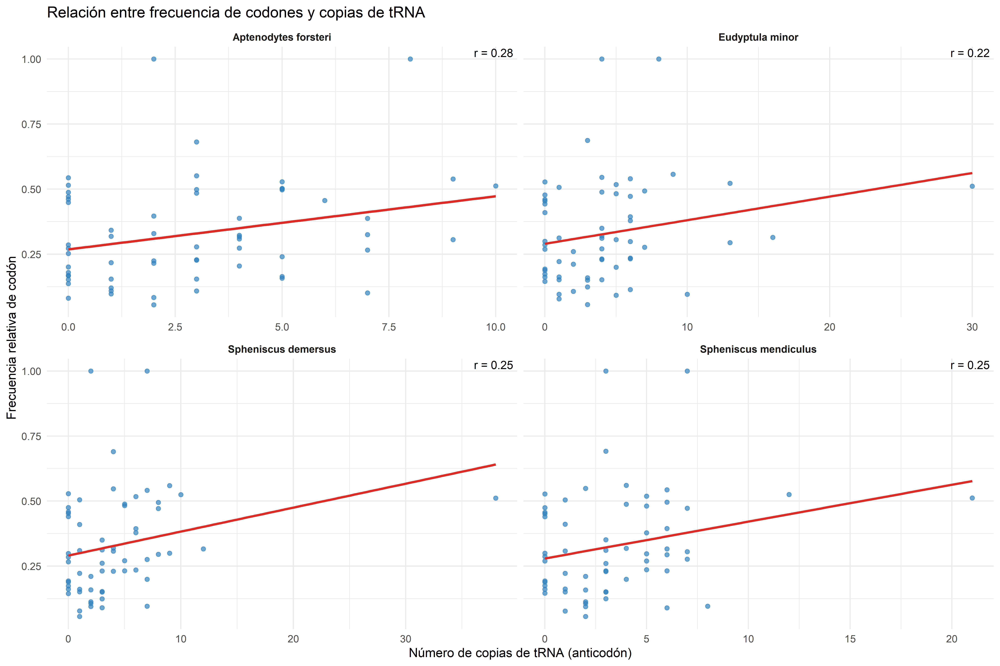

Filogenia vs. ambiente térmico en el sesgo de uso de codones de pingüinos
Autor/a
Gabriel Peña
Análisis bioinformático de codones y tRNAs en pingüinos
Este documento forma parte de la PEC2 y PEC3 del TFM en Bioinformática y Bioestadística (UOC)
y contiene el flujo completo de análisis comparativo de uso de codones y abundancia de tRNAs
para cuatro especies de pingüinos: Aptenodytes forsteri, Eudyptula minor, Spheniscus demersus
y Spheniscus mendiculus.
El propósito de esta etapa es demostrar que el flujo bioinformático ya funciona end-to-end:
desde la preparación y filtrado de datos, hasta los primeros análisis exploratorios reproducibles.
1. Configuración y carga de datos
En esta sección se cargan los paquetes necesarios, se define la estructura de las carpetas
y se asocian los archivos de entrada (CDS y tRNAs) con cada especie.
También se genera la tabla base que describe las correspondencias entre codones y aminoácidos.
2. Preparación y control de calidad de CDS
El objetivo aquí es asegurarse de que todas las secuencias codificantes (CDS) sean válidas antes de calcular estadísticas.
Se comprueba que:
Las secuencias tengan una longitud múltiplo de 3.
Cumplan una longitud mínima razonable (≥ 90 nt, equivalente a ~30 aminoácidos).
Se eliminan las CDS demasiado cortas o dudosas porque las secuencias incompletas o mal anotadas pueden distorsionar los conteos de codones y los valores de RSCU.
Código
# Función de control de calidad:# Se revisa que cada CDS tenga longitud múltiplo de 3 y sea suficientemente larga.check_orf <-function(seq) {s <-toupper(as.character(seq))if (nchar(s) <90) return(FALSE)if (nchar(s) %%3!=0) return(FALSE)TRUE}
Código
# Función para procesar una especie completa:# Se leen los CDS, se aplica el filtro anterior, se cuentan codones y se calculan los índices RSCU.process_species_cds <-function(species_id, label, cds_fasta, trna_file) {message("Procesando CDS para ", species_id, " (", label, ")")cds <-readDNAStringSet(cds_fasta)# Se aplica el filtro de calidad (ORFs válidos)orf_ok <-vapply(cds, check_orf, logical(1))cds_filt <- cds[orf_ok]message(" CDS válidos: ", sum(orf_ok), " / ", length(cds))# Se genera matriz con el conteo de cada codón por CDS (salto de 3 bases)codon_counts_mat <-trinucleotideFrequency(cds_filt,step =3,as.prob =FALSE)# Se convierte a formato largo y se añade la información de aminoácidocodon_counts_df <-as_tibble(codon_counts_mat, rownames ="seq_id") %>%pivot_longer(-seq_id, names_to ="codon", values_to ="count") %>%filter(count >0L) %>%left_join(codon_aa_tbl, by ="codon") %>%filter(!is.na(aa))# Se calcula el RSCU por gen:# RSCU = (uso observado) / (uso esperado si todos los codones sinónimos se usaran igual)rscu_gene <- codon_counts_df %>%group_by(seq_id, aa) %>%mutate(aa_total =sum(count),RSCU =if_else(aa_total >0,count * n_syn / aa_total,NA_real_)) %>%ungroup() %>%mutate(species = species_id,species_label = label)# Se calcula el RSCU promedio por especierscu_species <- rscu_gene %>%group_by(species, species_label, aa, codon) %>%summarise(RSCU =mean(RSCU, na.rm =TRUE),.groups ="drop")# Se obtienen las frecuencias relativas por aminoácido (cada conjunto suma 1)aa_freq_species <- codon_counts_df %>%group_by(aa, codon) %>%summarise(count =sum(count), .groups ="drop") %>%group_by(aa) %>%mutate(aa_total =sum(count),freq = count / aa_total) %>%ungroup() %>%mutate(species = species_id,species_label = label)# Resumen general de cuántos CDS se analizarongene_summary <-tibble(species = species_id,species_label = label,n_cds_total =length(cds),n_cds_orf_ok =length(cds_filt))list(rscu_gene = rscu_gene,rscu_species = rscu_species,aa_freq_species = aa_freq_species,gene_summary = gene_summary)}# Se ejecuta la función para todas las especies del estudiores_list <- species_info %>%select(species_id, label, cds_fasta, trna_file) %>%pmap(process_species_cds)# Se unen todos los resultados parciales en tablas generalesrscu_gene_all <-map_dfr(res_list, "rscu_gene")rscu_species_all <-map_dfr(res_list, "rscu_species")aa_freq_all <-map_dfr(res_list, "aa_freq_species")gene_summary_all <-map_dfr(res_list, "gene_summary")# Se guarda la tabla resumen de genes válidos por especiewrite_tsv(gene_summary_all, "results/gene_summary_by_species.tsv")gene_summary_all
3. Cálculo y visualización del uso relativo de codones (RSCU)
En esta etapa se combinan los resultados de cada especie para generar una matriz RSCU,
donde las filas son codones y las columnas son especies.
Esta matriz sirve como base para visualizaciones comparativas, como el heatmap o la PCA y permite identificar qué codones son preferidos o evitados en cada especie.
Código
# Se genera la matriz RSCU: filas = codones, columnas = especiesrscu_matrix_long <- rscu_species_all %>%select(aa, codon, species, RSCU)rscu_matrix_wide <- rscu_matrix_long %>%pivot_wider(names_from = species,values_from = RSCU) %>%arrange(aa, codon)# Se guarda la matriz para referencia posterior o análisis externoswrite_tsv(rscu_matrix_wide, "results/RSCU_matrix_by_species.tsv")# Se muestran las primeras filas en el documentorscu_matrix_wide %>%head()
# A tibble: 6 × 6
aa codon Afor Emin Sdem Smen
<chr> <chr> <dbl> <dbl> <dbl> <dbl>
1 A GCA 1.23 1.24 1.24 1.24
2 A GCC 1.21 1.31 1.31 1.31
3 A GCG 0.435 0.523 0.516 0.514
4 A GCT 1.29 1.30 1.30 1.31
5 C TGC 1.15 1.21 1.21 1.21
6 C TGT 0.991 1.03 1.02 1.03
3.1 Visualización general: heatmap de RSCU
Para tener una primera impresión global de las diferencias,
se representa un heatmap donde cada fila corresponde a un codón
y el color refleja su RSCU relativo entre las especies.
En este gráfico los valores se escalan por fila (scale = "row"),
de modo que los colores muestran diferencias relativas entre especies, no valores absolutos. Así se aprecian mejor los patrones de contraste.
Código
# Se prepara la matriz para el heatmaprscu_heatmap_mat <- rscu_species_all %>%unite("aa_codon", aa, codon, sep ="_") %>%select(aa_codon, species, RSCU) %>%pivot_wider(names_from = species, values_from = RSCU) %>%column_to_rownames("aa_codon") %>%as.matrix()# Se limpian los posibles NA o NaNrscu_heatmap_mat[is.nan(rscu_heatmap_mat)] <-NArscu_heatmap_mat[is.na(rscu_heatmap_mat)] <-0# Se eliminan las filas sin variación (para evitar errores en clustering)row_sds <-apply(rscu_heatmap_mat, 1, sd)rscu_heatmap_mat_filt <- rscu_heatmap_mat[row_sds >0, , drop =FALSE]# Se crea el heatmappheatmap(rscu_heatmap_mat_filt,cluster_rows =TRUE,cluster_cols =TRUE,scale ="row",main ="RSCU por codón (filas) y especie (columnas)")
Figura 1: Heatmap de valores RSCU para los 61 codones en cuatro especies de pingüinos.
4. Análisis a nivel de aminoácido
Hasta ahora analizamos el uso de codones individualmente,
pero los aminoácidos con varios codones sinónimos pueden mostrar
diferentes grados de sesgo interno.
En esta sección se calcula y visualiza la distribución de frecuencias de los codones sinónimos dentro de cada aminoácido,
y se cuantifica su desigualdad con el índice de Shannon.
Código
# Se selecciona un aminoácido de ejemplo para ilustraraa_of_interest <-"L"# Gráfico de barras: frecuencia relativa de cada codón sinónimo por especieaa_freq_all %>%filter(aa == aa_of_interest) %>%ggplot(aes(x = codon, y = freq, fill = species_label)) +geom_col(position ="dodge") +labs(title =paste("Frecuencia relativa de codones para", aa_of_interest),x ="Codón",y ="Frecuencia relativa") +scale_y_continuous(labels =percent_format(accuracy =1)) +theme(axis.text.x =element_text(angle =45, hjust =1))

Figura 2: Frecuencia relativa de codones sinónimos para un aminoácido de ejemplo (leucina) en las cuatro especies de pingüinos.
Código
# Se selecciona un aminoácido de ejemplo para ilustraraa_of_interest <-"Q"# Gráfico de barras: frecuencia relativa de cada codón sinónimo por especieaa_freq_all %>%filter(aa == aa_of_interest) %>%ggplot(aes(x = codon, y = freq, fill = species_label)) +geom_col(position ="dodge") +labs(title =paste("Frecuencia relativa de codones para", aa_of_interest),x ="Codón",y ="Frecuencia relativa") +scale_y_continuous(labels =percent_format(accuracy =1)) +theme(axis.text.x =element_text(angle =45, hjust =1))

Figura 3: Frecuencia relativa de codones sinónimos para un aminoácido de ejemplo en las cuatro especies de pingüinos.
4.1 Cuantificación del sesgo por aminoácido
No basta con ver la distribución: también interesa medir cuánto sesgo hay.
Para eso se calculan dos indicadores por aminoácido y especie:
Índice de Shannon (H’): mide la diversidad de uso de codones.
Cuanto menor es H’, más concentrado está el uso en unos pocos codones.
Varianza: mide la desigualdad en las frecuencias.
Estos valores permiten comparar el “nivel de uniformidad” entre aminoácidos y entre especies de forma más objetiva.
Código
aa_bias_metrics <- aa_freq_all %>%group_by(species, species_label, aa) %>%summarise(n_codons =n(),shannon_index =-sum(freq *log2(freq), na.rm =TRUE),variance_freq =var(freq, na.rm =TRUE),.groups ="drop") %>%mutate(shannon_rel = shannon_index /log2(n_codons) # 0–1 (1 = uso uniforme))# Se guardan los resultados para análisis posterioreswrite_tsv(aa_bias_metrics, "results/aa_bias_metrics.tsv")aa_bias_metrics %>%head()
# A tibble: 6 × 7
species species_label aa n_codons shannon_index variance_freq shannon_rel
<chr> <chr> <chr> <int> <dbl> <dbl> <dbl>
1 Afor Aptenodytes fo… A 4 1.86 0.0126 0.932
2 Afor Aptenodytes fo… C 2 0.996 0.00303 0.996
3 Afor Aptenodytes fo… D 2 0.995 0.00379 0.995
4 Afor Aptenodytes fo… E 2 1.000 0.0000121 1.000
5 Afor Aptenodytes fo… F 2 0.999 0.000461 0.999
6 Afor Aptenodytes fo… G 4 1.98 0.00226 0.990
4.2 Visualización del índice de Shannon relativo
Finalmente, se representa el índice de Shannon relativo (H' / Hmax)
para cada aminoácido y especie.
Un valor cercano a 1 indica que los codones se usan de forma uniforme,
mientras que valores bajos (≈ 0) revelan un fuerte sesgo.
Esta figura permite apreciar qué aminoácidos muestran más estabilidad y cuáles concentran el uso en pocos codones, lo que podría estar relacionado con preferencias de traducción o restricciones evolutivas.
Código
ggplot(aa_bias_metrics, aes(x = aa, y = shannon_rel, fill = species_label)) +geom_col(position ="dodge") +labs(title ="Índice de Shannon relativo del uso de codones por aminoácido",x ="Aminoácido",y ="H' relativo (0 = sesgo alto, 1 = uniforme)") +theme(axis.text.x =element_text(angle =45, hjust =1))

Figura 4: Índice de Shannon relativo por aminoácido, comparando la distribución de codones sinónimos entre especies.
5. Comparación entre especies: PCA y clustering
En esta sección se comparan los perfiles globales de uso de codones entre las cuatro especies.
La idea es ver si las especies se agrupan más por filogenia o por condiciones ambientales.
Se utilizan dos enfoques clásicos:
PCA (Análisis de Componentes Principales): reduce la información y muestra las diferencias globales.
Clustering jerárquico: agrupa las especies según su distancia en los valores de RSCU.
Si las especies filogenéticamente cercanas se agrupan, el patrón estaría dominado por la historia evolutiva.
Si las de ambientes similares se acercan aunque sean distantes, podría haber convergencia adaptativa.
Código
# Se genera el PCA sobre la matriz RSCU promedio por especierscu_pca_wide <- rscu_species_all %>%select(species, species_label, codon, RSCU) %>%pivot_wider(names_from = codon,values_from = RSCU)species_labels <- rscu_pca_wide$species_labelrscu_pca_mat <- rscu_pca_wide %>%select(-species, -species_label) %>%as.matrix()row.names(rscu_pca_mat) <- rscu_pca_wide$species# Se reemplazan los valores faltantes por 0 y se eliminan las columnas constantesrscu_pca_mat[is.na(rscu_pca_mat)] <-0col_sds <-apply(rscu_pca_mat, 2, sd)rscu_pca_mat_filt <- rscu_pca_mat[, col_sds >0, drop =FALSE]# Se ejecuta el PCApca_res <-prcomp(rscu_pca_mat_filt, scale. =TRUE)# Tabla de resultados de PCA (componentes principales)pca_df <-as_tibble(pca_res$x, rownames ="species") %>%left_join(species_info %>%select(species_id, label),by =c("species"="species_id"))# Se visualizan los dos primeras componentesggplot(pca_df, aes(x = PC1, y = PC2, label = label)) +geom_point(size =3, color ="#2c7fb8") + ggrepel::geom_text_repel(size =4,max.overlaps =Inf ) +labs(title ="PCA de RSCU promedio por especie",x =paste0("PC1 (", percent(summary(pca_res)$importance[2,1]), ")"),y =paste0("PC2 (", percent(summary(pca_res)$importance[2,2]), ")") ) +theme(plot.margin =margin(10, 20, 10, 10) )

Figura 5: Análisis PCA del uso relativo de codones (RSCU) entre especies de pingüinos.
5.1 Agrupamiento jerárquico
A continuación se construye un dendrograma que muestra las relaciones entre especies
según la distancia euclidiana en sus valores de RSCU.
En un análisis exploratorio, este gráfico ayuda a visualizar si los perfiles de uso de codones siguen el mismo patrón que el árbol filogenético.
Código
dist_species <-dist(rscu_pca_mat_filt)hc <-hclust(dist_species, method ="complete")op <-par(mar =c(5, 4, 4, 6))plot( hc,labels = species_labels,main ="Clustering jerárquico basado en RSCU",xlab ="",sub ="",cex =1.2# tamaño de letra de las etiquetas)par(op)

Figura 6: Clustering jerárquico de especies basado en las distancias de uso de codones (RSCU).
6. Relación codón–tRNA
El último paso conecta la frecuencia de uso de codones con la abundancia de tRNAs.
El objetivo es evaluar si los codones más usados en cada especie
coinciden con los anticodones más representados en su genoma (coadaptación).
Código
# Función para convertir anticodón (3'->5') en codón complementarioanticodon_to_codon <-function(ac) {ac_dna <-gsub("U", "T", toupper(ac))as.character(reverseComplement(DNAString(ac_dna)))}# Se realiza la conversión de nombres de aminoácidos de 3 a 1 letraaa3_to1 <-c(Ala ="A", Arg ="R", Asn ="N", Asp ="D",Cys ="C", Gln ="Q", Glu ="E", Gly ="G",His ="H", Ile ="I", Leu ="L", Lys ="K",Met ="M", Phe ="F", Pro ="P", Ser ="S",Thr ="T", Trp ="W", Tyr ="Y", Val ="V")# Se realiza la lectura y resumen de archivos de tRNAscan-SEread_trna_counts <-function(trna_file, species_id) {# Se saltan las 3 líneas de cabeceratrna_raw <- readr::read_table(trna_file,skip =3,col_names =FALSE,show_col_types =FALSE)# X5: Tipo de tRNA (AA)# X6: Anticodón# X10: Nota (pseudo)trna_df <-tibble(species = species_id,aa3 = trna_raw[[5]],anticodon =toupper(trna_raw[[6]]),note =if (ncol(trna_raw) >=10) trna_raw[[10]] elseNA_character_) %>%mutate(aa = aa3_to1[aa3]) %>%filter(!is.na(aa),aa !="",is.na(note) |!str_detect(note, "pseudo")) %>%mutate(codon =map_chr(anticodon, anticodon_to_codon))# Se cuentan los tRNAs por codóntrna_counts <- trna_df %>%dplyr::count(species, aa, codon, name ="tRNA_copies")trna_counts}# Se aplica la función a todas las especiestrna_counts_all <- species_info %>%select(species_id, trna_file) %>%pmap_dfr(~read_trna_counts(..2, ..1))trna_counts_all
# A tibble: 188 × 4
species aa codon tRNA_copies
<chr> <chr> <chr> <int>
1 Afor A GCA 9
2 Afor A GCG 2
3 Afor A GCT 7
4 Afor C TGC 9
5 Afor D GAC 6
6 Afor E GAA 5
7 Afor E GAG 5
8 Afor F TTC 3
9 Afor G GGA 4
10 Afor G GGC 7
# ℹ 178 more rows
6.1 Unir frecuencias de codones y copias de tRNA
Aquí se combinan las dos tablas:
- Frecuencia relativa de cada codón (aa_freq_all)
- Número de copias del tRNA correspondiente (trna_counts_all)
Luego se calculan las correlaciones (Spearman y Pearson) por especie.
Por último, se genera un gráfico de dispersión para cada especie.
Cada punto representa un codón:
- Eje X = número de copias del tRNA correspondiente.
- Eje Y = frecuencia relativa del codón en el genoma.
La línea de tendencia indica si existe una correlación positiva (coadaptación).
Código
# Se calcula el coeficiente de correlación por especiecor_data <- codon_trna_join %>%group_by(species_label) %>%summarise(r =cor(tRNA_copies, codon_freq, method ="pearson", use ="complete.obs")) %>%mutate(r_label =paste0("r = ", round(r, 2)))# Se genera el gráfico con anotacionesggplot(codon_trna_join,aes(x = tRNA_copies, y = codon_freq)) +geom_point(alpha =0.7, color ="#3182bd") +geom_smooth(method ="lm", se =FALSE, color ="#de2d26") +facet_wrap(~ species_label, scales ="free_x") +geom_text(data = cor_data,aes(x =Inf, y =Inf, label = r_label),hjust =1.1, vjust =1.2, size =3.5, color ="black",inherit.aes =FALSE ) +labs(title ="Relación entre frecuencia de codones y copias de tRNA",x ="Número de copias de tRNA (anticodón)",y ="Frecuencia relativa de codón" ) +theme_minimal() +theme(strip.text =element_text(face ="bold"))

Figura 7: Relación entre la abundancia de tRNAs (anticodones) y la frecuencia relativa de codones por especie.
7. Comparación por pares de especies mediante ortólogos 1:1
En esta sección se integran los resultados de OrthoFinder (orthogrupos 1:1) con los CDS de cada especie para calcular distancias codónicas por gen entre pares de especies contrastantes. A partir de estas distancias se construyen rankings de genes más divergentes y más similares, y se generan listas para análisis GO.
7.1 Funciones auxiliares
En este bloque se cargan las funciones auxiliares necesarias para el análisis por pares: cálculo de frecuencias codónicas por gen, normalización de dichas frecuencias y extracción de identificadores de proteínas a partir de los headers de los CDS.
Código
# Función: frecuencia codónica por gencalc_codon_freq <-function(sequence){codons <-s2c(sequence) %>%split(., ceiling(seq_along(.)/3))codons <-sapply(codons, function(x) paste0(x, collapse =""))table(codons)}#Función: normalizar frecuenciasnormalize <-function(x) x /sum(x)# Función: extraer ID de proteína desde el header de CDSextract_protein_id <-function(header) {id <-str_extract(header,"(XP_\\d+\\.\\d+|KAF\\d+\\.\\d+|NP_\\d+\\.\\d+)")if (!is.na(id)) id elseNA_character_}
7.2 – Especies, rutas y lectura de Orthogroups
Se definen los pares de especies que se van a comparar, se especifican las rutas a los datos (data/) y se lee el archivo Orthogroups.txt generado por OrthoFinder. A partir de este archivo se construyen los orthogrupos 1:1, es decir, aquellos con una única copia por especie presentes en todas las especies analizadas.
Código
# Definir parespairs <-list(pair1 =c("SPH_DEM", "SPH_MEN"),pair2 =c("APT_FOR", "EUD_MIN"))# Especies y rutasspecies <-c("APT_FOR", "EUD_MIN", "SPH_DEM", "SPH_MEN")cds_path <-"data"# Ruta al Orthogroups.txt de OrthoFinderorthogroups_txt <-"orthofinder_input/OrthoFinder/Results_Dec03_2/Orthogroups/Orthogroups.txt"# Ajustar la ruta según la fecha y la carpeta generada por OrthoFinder correspondiente al análisis realizado# Mapa prot_id -> especie a partir de protein.faabuild_prot_map <-function(sp){ prots <-read.fasta(file.path("data", sp, "protein.faa"))tibble(prot_id =sapply(names(prots), function(h) str_extract(h, "^[^ ]+")),species = sp )}prot_map <- purrr::map_dfr(species, build_prot_map)# Parsear Orthogroups.txt y seleccionar orthogrupos 1:1og_lines <-readLines(orthogroups_txt)og_long <-tibble(line = og_lines) %>% tidyr::separate(line, into =c("Orthogroup", "rest"),sep =":\\s+", extra ="merge") %>%mutate(rest =str_trim(rest)) %>%mutate(prot_id =str_split(rest, "\\s+")) %>% tidyr::unnest(prot_id) %>%left_join(prot_map, by ="prot_id") %>%filter(!is.na(species))og_counts <- og_long %>%group_by(Orthogroup, species) %>%summarise(n =n(), .groups ="drop")single_ogs <- og_counts %>%group_by(Orthogroup) %>%summarise(n_species =n(),all_single =all(n ==1),.groups ="drop" ) %>%filter(n_species ==length(species), all_single) %>%pull(Orthogroup)single_long <- og_long %>%filter(Orthogroup %in% single_ogs)message("Orthogrupos 1:1 (todas las especies, una copia cada una): ",length(unique(single_long$Orthogroup)))
7.3 – Distancias codónicas por par de especies
Se recorren los pares de especies definidos arriba. Para cada par se seleccionan los orthogrupos 1:1 correspondientes, se enlazan con los CDS de cada especie y se calculan las distancias codónicas por gen (euclidianas sobre frecuencias normalizadas de codones). El resultado es una tabla por par con un ranking de orthogrupos desde los más divergentes a los más similares.
Código
pair_results <-list()for(p innames(pairs)){ spA <- pairs[[p]][1] spB <- pairs[[p]][2]message("Analizando par: ", spA, " vs ", spB)# Orthogrupos 1:1 para este par og_pair <- single_long %>% dplyr::filter(species %in%c(spA, spB)) %>% dplyr::select(Orthogroup, species, prot_id) %>% tidyr::pivot_wider(names_from = species,values_from = prot_id )# Renombrar columnas dinámicamente og_pair <- og_pair %>% dplyr::rename(protA =!!rlang::sym(spA),protB =!!rlang::sym(spB) ) %>% dplyr::filter(!is.na(protA), !is.na(protB))message(" Orthogrupos 1:1 con ambas especies: ", nrow(og_pair))if (nrow(og_pair) ==0) {warning("No hay orthogrupos 1:1 para el par ", p, ". El CSV saldrá vacío.") pair_results[[p]] <-tibble(Orthogroup =character(),protA =character(),protB =character(),dist_codon =numeric() )next }# Lectura de CDS y asociación a proteínas cdsA <-read.fasta(file.path(cds_path, spA, "cds_from_genomic.fna")) cdsB <-read.fasta(file.path(cds_path, spB, "cds_from_genomic.fna")) cleanA <- cdsA[sapply(cdsA, function(x) length(x) %%3==0)] cleanB <- cdsB[sapply(cdsB, function(x) length(x) %%3==0)] idsA <-sapply(names(cleanA), extract_protein_id) idsB <-sapply(names(cleanB), extract_protein_id) keepA <-!is.na(idsA) keepB <-!is.na(idsB) cleanA <- cleanA[keepA]; idsA <- idsA[keepA] cleanB <- cleanB[keepB]; idsB <- idsB[keepB] df_cdsA <-tibble(prot_id = idsA,seqA =sapply(cleanA, c2s) ) df_cdsB <-tibble(prot_id = idsB,seqB =sapply(cleanB, c2s) ) df_pair <- og_pair %>% dplyr::left_join(df_cdsA, by =c("protA"="prot_id")) %>% dplyr::left_join(df_cdsB, by =c("protB"="prot_id")) %>% dplyr::filter(!is.na(seqA), !is.na(seqB))message(" Orthogrupos con CDS en ambas especies: ", nrow(df_pair))if (nrow(df_pair) ==0) {warning("No hay CDS emparejados para el par ", p, ". El CSV saldrá vacío.") pair_results[[p]] <-tibble(Orthogroup =character(),protA =character(),protB =character(),dist_codon =numeric() )next }# Frecuencias y distancias codónicas freqsA <-lapply(df_pair$seqA, calc_codon_freq) freqsB <-lapply(df_pair$seqB, calc_codon_freq) freqsA_norm <-lapply(freqsA, normalize) freqsB_norm <-lapply(freqsB, normalize) distances <- purrr::map2_dbl(freqsA_norm, freqsB_norm, function(a,b){ all_codons <-union(names(a), names(b)) a <- a[all_codons]; a[is.na(a)] <-0 b <- b[all_codons]; b[is.na(b)] <-0sqrt(sum((a - b)^2)) }) df_out <-tibble(Orthogroup = df_pair$Orthogroup,protA = df_pair$protA,protB = df_pair$protB,dist_codon = distances ) %>%arrange(desc(dist_codon)) pair_results[[p]] <- df_out}
7.4 – Guardar CSV y resumen básico
Una vez calculadas las distancias codónicas para cada par, en este bloque se crean las carpetas de resultados, se guardan los archivos .csv con las distancias por orthogrupo y se imprime un pequeño resumen descriptivo (summary) de las distancias para cada comparación.
Código
# Crear carpetas si no existenif (!dir.exists("results")) {dir.create("results")message("Carpeta 'results' creada.")}if (!dir.exists("results/PEC3_pairs")) {dir.create("results/PEC3_pairs", recursive =TRUE)message("Carpeta 'results/PEC3_pairs' creada.")}# Guardar resultados y mostrar resumen por parfor(p innames(pair_results)){df <- pair_results[[p]]output_file <-paste0("results/PEC3_pairs/", p, "_distancias_codones.csv")write_csv(df, output_file)message("Archivo guardado: ", output_file)message(" n orthogrupos en ", p, ": ", nrow(df))if (nrow(df) >0) {message(" resumen dist_codon:")print(summary(df$dist_codon))}message("\n---------------------------------------\n")}
Min. 1st Qu. Median Mean 3rd Qu. Max.
0.000000 0.001478 0.004641 0.008729 0.009244 0.157585
Min. 1st Qu. Median Mean 3rd Qu. Max.
0.002543 0.015051 0.024872 0.033184 0.044453 0.214491
7.5 – Barplot de los 20 orthogrupos más divergentes
Aquí se seleccionan, para cada par de especies, los 20 orthogrupos con mayor distancia codónica y se generan gráficos de barras (guardados como .png) que muestran visualmente qué genes ortólogos son los más divergentes a nivel de uso de codones. Esto facilita escoger candidatos para una interpretación biológica más fina y para el análisis funcional posterior.
Código
for(p innames(pairs)){df <- pair_results[[p]]if (nrow(df) ==0) {message("Saltando ", p, " (sin datos).")next}df <- df %>%filter(!is.na(dist_codon))if (nrow(df) ==0) {message("Todas las distancias son NA en ", p, ". No se genera figura.")next}top20 <- df %>%dplyr::slice_max(order_by = dist_codon, n =20, with_ties =FALSE)top20 <- top20 %>%mutate(Orthogroup =factor(Orthogroup, levels =rev(Orthogroup)))png(paste0("results/PEC3_pairs/", p, "_heatmap_top20.png"),width =1200, height =900)print(ggplot(top20, aes(x = Orthogroup, y = dist_codon)) +geom_col() +coord_flip() +theme_bw(base_size =16) +labs(title =paste("Top 20 orthogrupos más divergentes -", p),y ="Distancia codónica", x ="Orthogrupo"))dev.off()}
7.6 – Listas para GO (usando protA)
Finalmente, en este bloque se generan listas de identificadores de proteínas (protA) a partir de los orthogrupos ordenados por distancia codónica. Para cada par se exportan dos listas: las 200 proteínas más divergentes y las 200 más similares. Estas listas se guardan en formato texto y servirán como entrada para los análisis de enriquecimiento funcional (GO) previstos en la siguiente fase del TFM.
Código
for(p innames(pair_results)){df <- pair_results[[p]]if (nrow(df) ==0) {message("Saltando listas GO para ", p, " (sin datos).")next}df <- df %>%filter(!is.na(dist_codon), !is.na(protA))if (nrow(df) ==0) {message("Sin distancias/protA válidos en ", p, ".")next}top_div <-head(df$protA, 200)top_sim <-tail(df$protA, 200)write_lines(top_div,paste0("results/PEC3_pairs/", p, "_GO_genes_divergentes.txt"))write_lines(top_sim,paste0("results/PEC3_pairs/", p, "_GO_genes_similares.txt"))message("Listas GO generadas para ", p)}
8. Conclusión de la fase bioinformática
El análisis bioinformático del proyecto avanzó desde una caracterización global del sesgo de uso de codones (PEC2) hacia un análisis comparativo profundo centrado en la separación entre filogenia y ambiente térmico (PEC3). En la primera fase (PEC2), se completó la preparación y limpieza de los datos: selección de CDS válidos, identificación de tRNAs mediante tRNAscan-SE, cálculo de perfiles RSCU, medición de la entropía por aminoácido y análisis multiespecie mediante PCA y clustering. Estos resultados establecieron las bases para interpretar patrones generales de sesgo codónico entre especies de pingüinos.
En la segunda fase (PEC3), el enfoque se volvió más resolutivo y centrado en comparaciones por pares de especies. Se integraron los resultados de OrthoFinder para identificar orthogrupos 1:1 presentes en todas las especies, lo que permitió obtener conjuntos de genes ortólogos estrictamente comparables. A partir de esos genes, se calcularon distancias codónicas por gen, generando rankings de genes más divergentes y más conservados. También se produjeron nuevas figuras (barplots de los 20 genes más divergentes por par) y se generaron listas para análisis funcional GO, que se completará en la PEC4.
En conjunto, el flujo PEC2 + PEC3 permite abordar la pregunta central del TFM desde dos escalas complementarias:
Escala global: diferencias codónicas ampliamente determinadas por la filogenia.
Escala por pares: ciertos genes muestran divergencias compatibles con posibles respuestas adaptativas asociadas al ambiente térmico.
El pipeline actualizado es completamente reproducible, modular y documentado, y deja preparado el camino para la PEC4, donde se realizarán los análisis funcionales, los contrastes estadísticos finales (incluyendo Mantel entre distancia térmica y filogenética), y la interpretación evolutiva completa
Este proyecto se basa exclusivamente en datos públicos obtenidos desde NCBI GenBank y en herramientas de software libre (R, Bioconductor, seqinr, ggplot2, OrthoFinder). El análisis no involucra muestras biológicas, animales ni personas, por lo que no genera conflictos de integridad clínica, bienestar animal o protección de datos personales.
Desde la perspectiva de la sostenibilidad, el flujo se ha implementado de manera modular, reproducible y eficiente, favoreciendo el uso responsable de recursos computacionales. La integración de OrthoFinder y los pipelines R/Quarto se alinea con los principios de investigación abierta y reproducible, facilitando que otros investigadores puedan replicar, auditar o ampliar los resultados sin depender de software propietario.
El proyecto contribuye a los ODS 13, 15 y 16 al promover la ciencia abierta, la transparencia en el uso de datos y una comprensión molecular más profunda de especies vulnerables como los pingüinos, cuyo estado de conservación está fuertemente ligado al cambio climático y a la pérdida de biodiversidad marina.